Lyapunov Dashboard — User Guide (GitHub)

A realtime, interactive dashboard for exploring nonlinear dynamics, recording multichannel time series, and training models (SINDy / Reservoir Computing). This GitHub-facing guide focuses on getting started, CLI usage, configuration, and a feature‑by‑feature walkthrough with images.
Version: 1.0 · Last updated: {{ git_revision_date_localized or "—" }}
0) TL;DR Quickstart
# Install the Python package
pip install lyapunov-lab
# Launch the app (CLI)
lyapunov-lab start
- Opens the dashboard locally with sensible defaults.
- For remote/container deployments, see Configuration below.
1) CLI Reference
The package exposes a single top-level command with one option (port). The CLI boots the FastAPI backend (and serves the prebuilt frontend if available).
# Start the backend (FastAPI via uvicorn)
lyapunov-lab start --port 3000
# Option details
--port Port to run the backend server on (default: 3000)
Under the hood this launches:
uvicorn lyapunov_lab.backend.app:app --host 0.0.0.0 --port <PORT>
The frontend static build is auto-mounted at
/if found atlyapunov_lab/frontend/out.
2) Configure the Frontend (WebSocket)
The dashboard consumes a live stream over WebSocket at /api/stream from the backend (same origin by default). If you deploy the frontend separately, point it to your backend origin.
Recommended snippet in your UI to allow env-based configuration:
// src/PlaygroundView.tsx
export const WS_URL =
process.env.NEXT_PUBLIC_WS_URL ??
(typeof window !== "undefined"
? `ws://${window.location.host}/api/stream`
: "ws://localhost:3000/api/stream");
Replace the file path/link to match your repo, e.g.
src/PlaygroundView.tsx.
3) Stream from Hardware (UDP → Server → WebSocket)
UDP ingestion → backend buffers the latest batch → pushes to all WebSocket clients at /api/stream.
- UDP listen address:
0.0.0.0:5005 - Packet format: JSON array of objects with
x,y,z(you can addt/time/timestamptoo)
3.1 Microcontroller example (Wi‑Fi UDP)
#include <WiFi.h>
#include <WiFiUdp.h>
#include <hardware/adc.h>
#include <pico/multicore.h>
// ====== USER CONFIG ======
const char* ssid = "YOUR_SSID";
const char* password = "YOUR_PASSWORD";
const char* destIP = "YOUR_COMPUTER_IP"; // FastAPI host IP
const uint16_t destPort = 5005; // UDP port FastAPI listens on
// ==========================
// Sampling config
const int NUM_SAMPLES = 100; // per batch
const int NUM_CHANNELS = 3;
volatile uint16_t sampleBuffer[NUM_CHANNELS][NUM_SAMPLES];
volatile bool bufferReady = false;
WiFiUDP udp;
// =========================================================
// CORE 1 → ADC SAMPLING
// =========================================================
void core1_adcTask() {
adc_init();
adc_gpio_init(26); // CH0
adc_gpio_init(27); // CH1
adc_gpio_init(28); // CH2
adc_set_clkdiv(0); // fastest (~500 kS/s)
while (true) {
if (!bufferReady) {
for (int i = 0; i < NUM_SAMPLES; i++) {
for (int ch = 0; ch < NUM_CHANNELS; ch++) {
adc_select_input(ch);
sampleBuffer[ch][i] = adc_read();
}
}
bufferReady = true;
}
tight_loop_contents();
}
}
// =========================================================
// CORE 0 → Wi-Fi + UDP TX
// =========================================================
void connectWiFi() {
WiFi.mode(WIFI_STA);
WiFi.begin(ssid, password);
Serial.print("Connecting to Wi-Fi");
while (WiFi.status() != WL_CONNECTED) {
delay(500);
Serial.print(".");
}
Serial.println("\nConnected!");
Serial.print("IP address: ");
Serial.println(WiFi.localIP());
}
void setup() {
Serial.begin(115200);
delay(1000);
connectWiFi();
udp.begin(destPort);
multicore_launch_core1(core1_adcTask);
Serial.println("ADC sampling + JSON UDP streaming started...");
}
void loop() {
if (!bufferReady) return;
// Prepare JSON string batch
String jsonData = "[";
for (int i = 0; i < NUM_SAMPLES; i++) {
jsonData += "{\"x\":";
jsonData += sampleBuffer[0][i];
jsonData += ",\"y\":";
jsonData += sampleBuffer[1][i];
jsonData += ",\"z\":";
jsonData += sampleBuffer[2][i];
jsonData += "}";
if (i < NUM_SAMPLES - 1) jsonData += ",";
}
jsonData += "]";
// Send over UDP
udp.beginPacket(destIP, destPort);
udp.print(jsonData);
udp.endPacket();
Serial.printf("Sent %d samples (%d bytes) to %s:%d\n",
NUM_SAMPLES, jsonData.length(), destIP, destPort);
bufferReady = false;
}
3.2 Desktop simulator (CSV → UDP)
Use the included helper to test without hardware:
python scripts/simulate_device.py \
# expects CSV with columns: x,y,z
Key bits from scripts/simulate_device.py:
UDP_IP = "127.0.0.1" # change if FastAPI runs elsewhere
UDP_PORT = 5005 # must match backend
CSV_PATH = "scripts/logs/lorenz_sample_output.csv"
SEND_INTERVAL = 0.01
4) Feature‑by‑Feature Walkthrough (with Images)
Place images under
docs/images/(or adjust paths). Keep the single logo at top‑left.
4.1 Overview
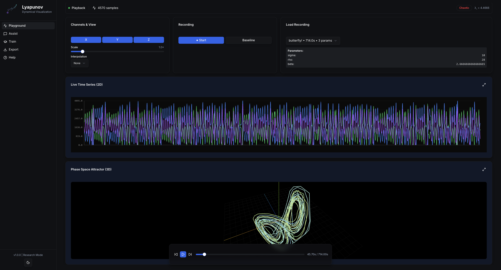 The main Playground exposes live plots, 3D phase‑space, recording, and playback controls.
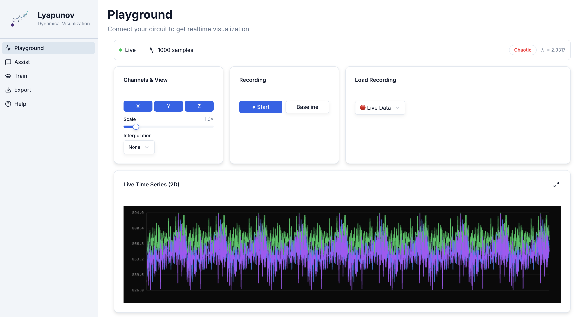
4.2 Channels, Options & Lyapunov
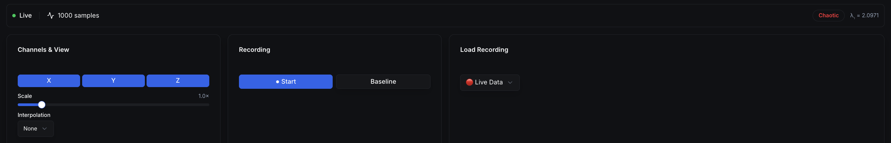
- Toggle X / Y / Z channels
- Adjust Scale and Interpolation (none / linear / spline)
- Start/stop Recording; set Baseline
- Live Lyapunov exponent & state classifier (Stable / Periodic / Quasi‑Periodic / Chaotic)
4.3 Visualizations
Time series (fullscreen) 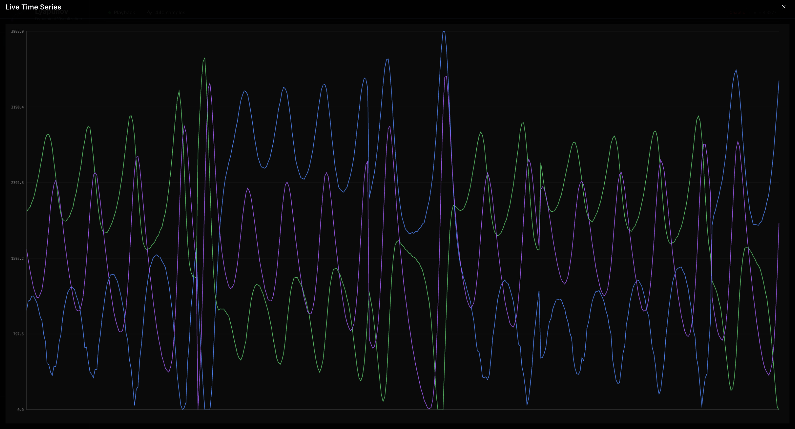 Click the maximize button to expand to fullscreen.
Phase‑space trajectory (fullscreen)
 Orbit to rotate • scroll to zoom • right-drag to pan.
Orbit to rotate • scroll to zoom • right-drag to pan.
4.4 Recording & Playback
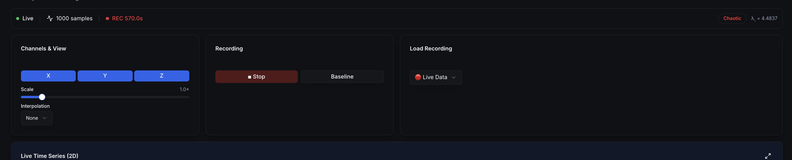
 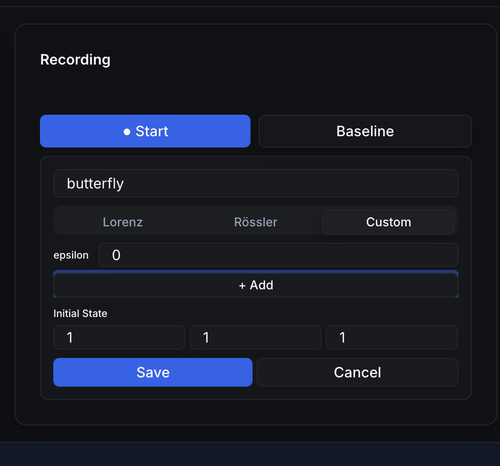
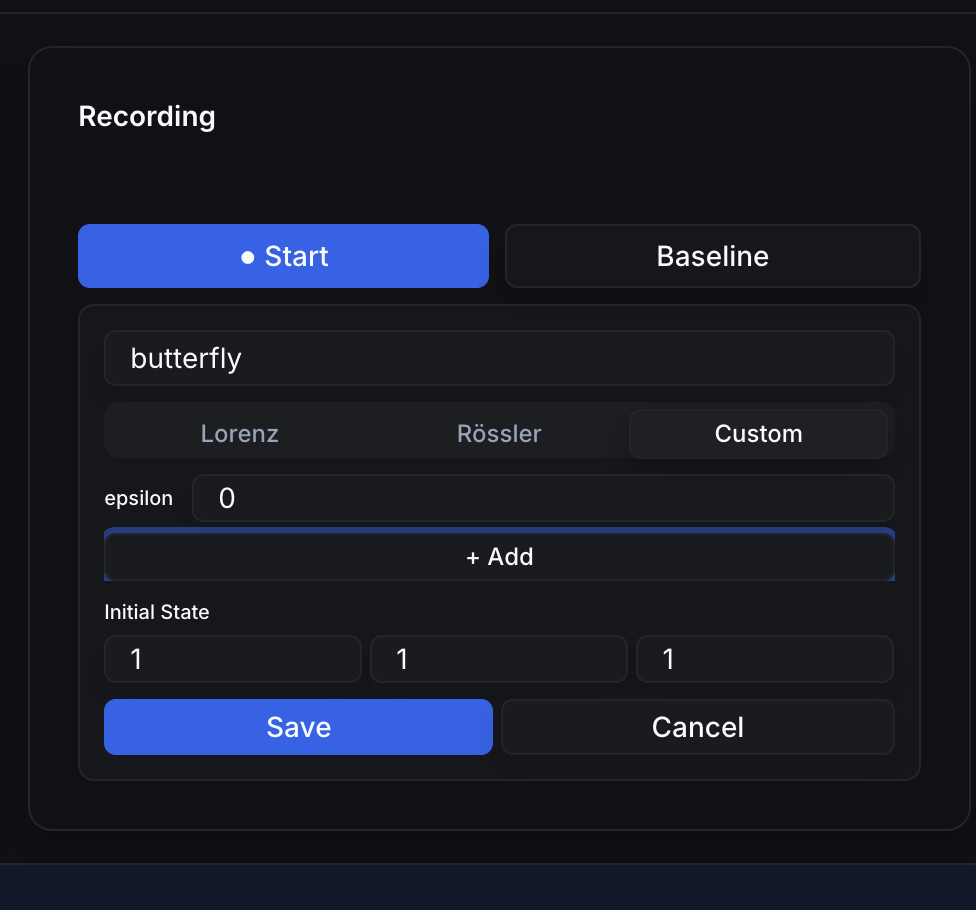
Attach system parameters (e.g., Lorenz σ, ρ, β) and initial state.
 Floating Playback Controls allow play/pause, skip, scrubbing. Timeline in seconds (assuming 100 Hz).
Floating Playback Controls allow play/pause, skip, scrubbing. Timeline in seconds (assuming 100 Hz).
4.5 Analysis
 Visualizes qualitative regime changes (e.g., period-doubling routes to chaos).
Visualizes qualitative regime changes (e.g., period-doubling routes to chaos).
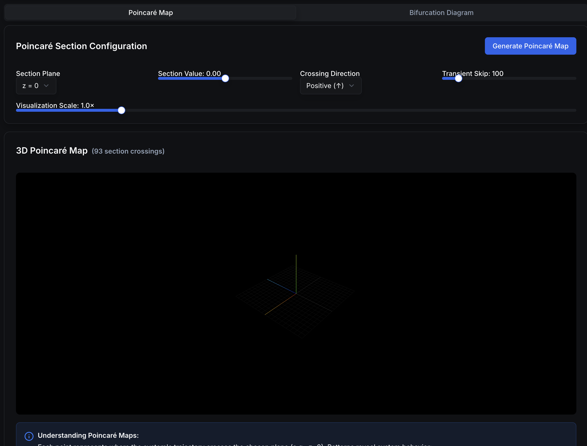 Section crossings reveal periodic / quasi‑periodic / chaotic structure.
4.6 Training
 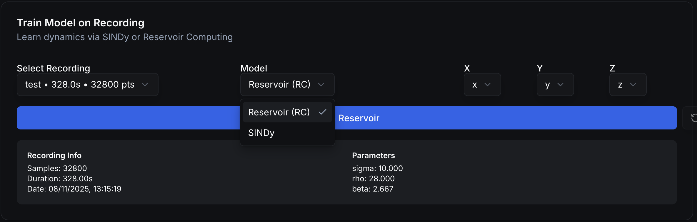
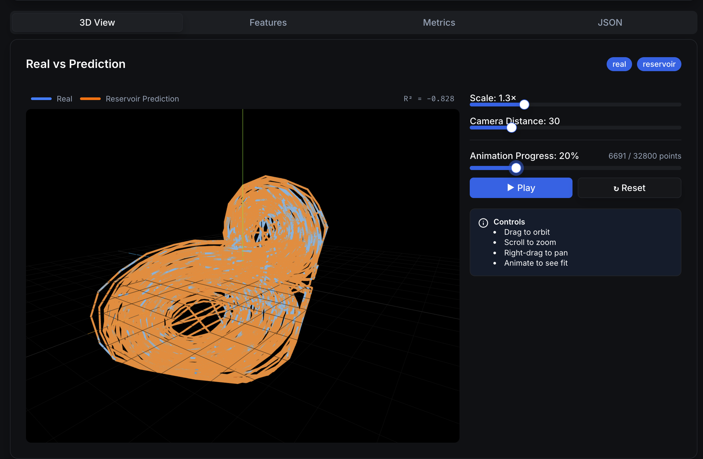
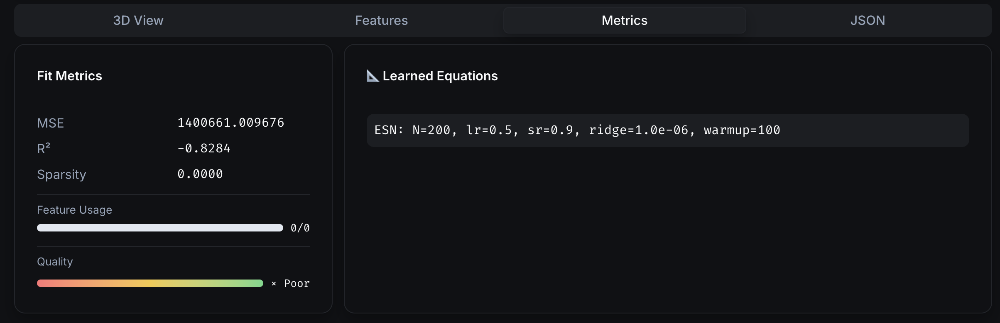
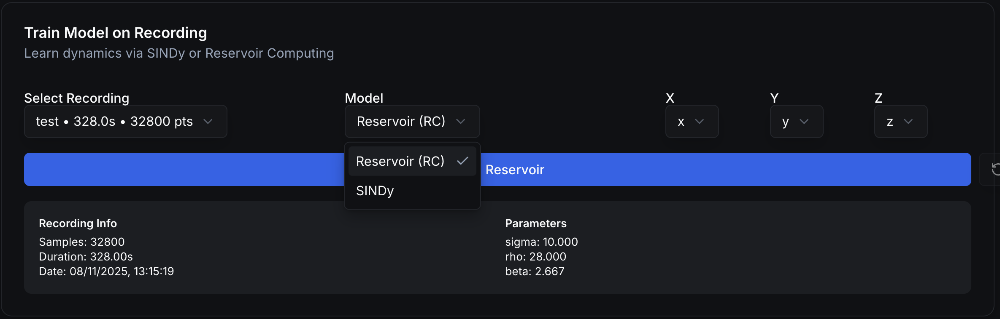
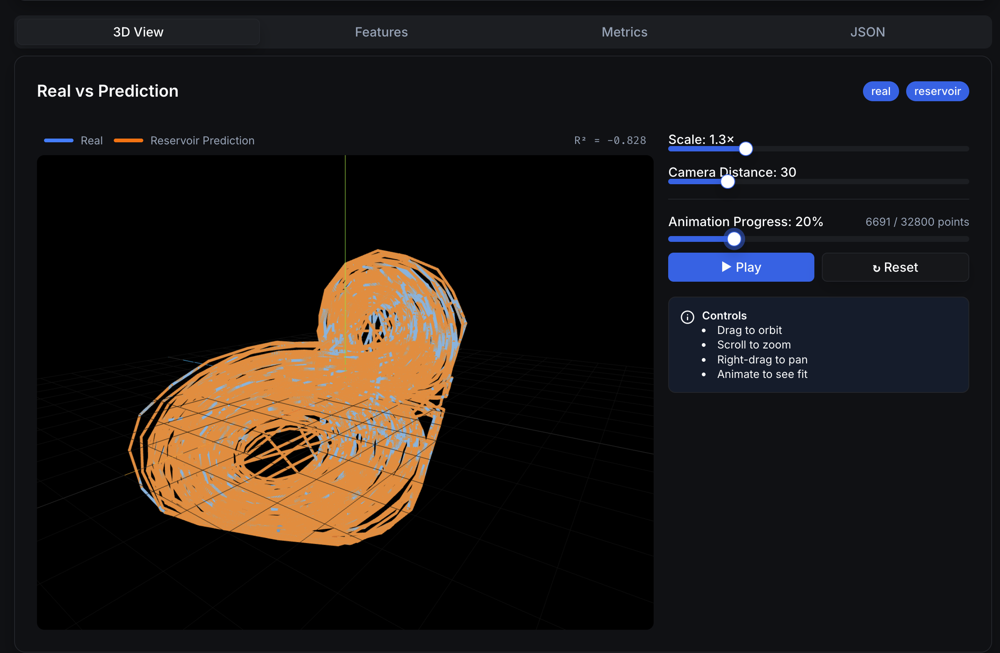
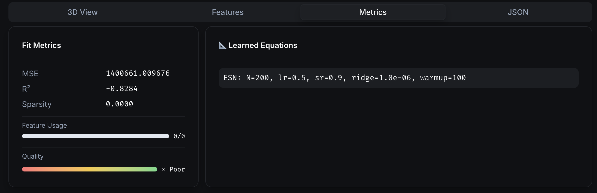

5) Backend API (for Integrators)
Base URL: http://<host>:<port> (default port from CLI is 3000)
5.1 Health
GET /api/health→{ status: "ok", sindy: <bool> }
5.2 Live stream
WS /api/stream→ pushes{ samples: [ {x,y,z,(t?)}... ], timestamp }
5.3 Train SINDy
-
POST /api/sindy/train→SindyTrainResponse -
Accepts a
recording(x,y,z time series) andaxesmapping. - Uses PySINDy when available; falls back to linear model otherwise.
- Returns equations, metrics (MSE, R², sparsity), per‑equation feature table, and aligned prediction.
5.4 Train Reservoir (Echo State Network)
-
POST /api/rc/train→SindyTrainResponse -
Requires reservoirpy. Teacher forcing on train split; autonomous rollout on test split.
- Returns ESN summary in
equations, plus metrics over the test region.
Models / Schemas: Recording, Axes, SindyTrainRequest, SindyTrainResponse, Metrics, FeatureInfo (see backend code for full definitions).
6) Power‑User Tips
- Orbit controls (3D): drag to orbit • scroll to zoom • right‑drag to pan.
- Fullscreen: click the maximize icon on charts.
- Baselining: capture a baseline segment to drive anomaly scoring.
- Recording format (frontend): stored in
localStoragenld_recordingswithname,timestamp,duration,data: Array<Record<string, number>>, optionalparameters,initialState.
7) Installation & Dependencies
# from PyPI
pip install lyapunov-lab
# run backend
lyapunov-lab start --port 3000
Optional accelerators (detected at runtime):
pip install pysindy reservoirpy scikit-learn
If PySINDy/ReservoirPy aren’t installed, the backend will gracefully fall back to the linear baseline or disable the ESN endpoint.
8) MkDocs Site (for Open‑Source Docs)
Add a docs/mkdocs.yml (example below) and keep pages in docs/. This keeps the README lean while publishing rich docs.
site_name: Lyapunov Lab
repo_url: https://github.com/<org>/<repo>
repo_name: <org>/<repo>
theme:
name: material
features:
- navigation.instant
- navigation.tabs
- content.code.copy
- toc.integrate
markdown_extensions:
- admonition
- toc:
permalink: true
nav:
- Home: index.md
- Quickstart: quickstart.md
- Features: features.md
- Configuration: configuration.md
- Backend API: backend-api.md
- Streaming (Hardware/UDP): streaming.md
- CLI: cli.md
- Troubleshooting: troubleshooting.md
- Contributing: contributing.md
Suggested page stubs:
docs/index.md— project pitch + single left logo.docs/quickstart.md—pip install+lyapunov-lab start+ simulator.docs/features.md— the walkthrough with images (Section 4).docs/configuration.md— env vars, WS URL, static mount, ports.docs/backend-api.md— endpoints & schemas (Section 5).docs/streaming.md— UDP formats, microcontroller & CSV simulator.docs/cli.md— command/flags.docs/troubleshooting.md— common pitfalls (CORS, UDP blocked, CSV format).docs/contributing.md— dev setup, code style, tests, release.
Keep build commands for maintainers in
CONTRIBUTING.md; the public docs describe usage, not how to build the docs themselves.
9) Repo Layout (short)
lyapunov_lab/
backend/app.py # FastAPI app, UDP→WS bridge, SINDy & ESN endpoints
frontend/out/ # static export served at '/'
cli.py # exposes `lyapunov-lab` CLI
scripts/
simulate_device.py # CSV→UDP sender for local testing
docs/
images/ # screenshots used in Features section
mkdocs.yml # site config (example above)
Citation (circuit basis used in examples):
- https://www.sciencedirect.com/science/article/pii/S3050517825000711
- https://www.sciencedirect.com/science/article/abs/pii/S3050517825000711
Note: As requested, the README omits maintainer‑oriented build‑the‑docs steps, but the documentation site structure above is ready for publishing.